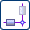
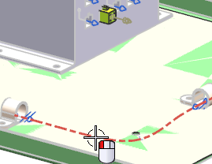
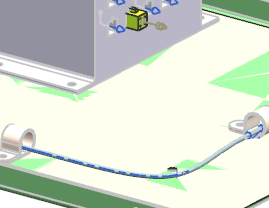

On the Routing Electrical toolbar, from the Stock Drop–down list, select Space Reservation .
Select the routing segment you just completed.

In the Space Reservation group, from the Stock list, make sure Circular is selected.
In the Diameter box, type 4 and 回车。
点击确定。
